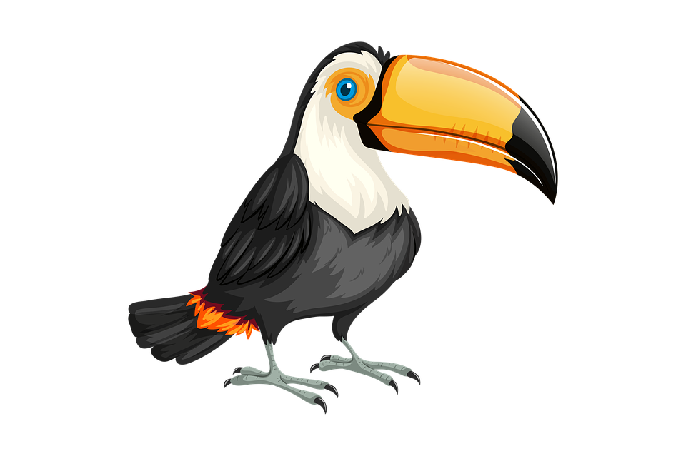

PRESERVAÇÃO E IMPORTÂNCIA
Os animais possuem papéis importantes para a manutenção do equilíbrio na natureza. São eles quem dispersam sementes "plantando" árvores, controlam populações de espécies que quando em excesso podem ser prejudiciais as nossas lavouras e criações, e ainda produzem remédios importantes para a cura de muitas doenças. Cada pequeno animal tem sua função específica na natureza e a sua ausência acarreta em prejuízos incalculáveis para a humanidade. Por isso, faz-se necessária a luta contra os animais silvestres e o equilibrio da biodiversidade.
Existem ONGs e projetos que fazem grande trabalho de preservação e busca de punição para crimes cometidos contra os animais. Passe para a próxima página para conhecer mais esse trabalho!